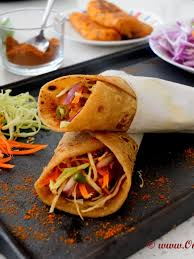

franky

This veg frankie recipe is one of the most loved Indian street food! Whole wheat roti or chapati is layered with spiced mashed potato rolls, green chutney, chopped onions, pickled green chilies, and frankie masala
Ingredients
- wheat
- potato
- green chutney
- chopped onions
- pickled green chilies
- frankie masala
Steps
- In a mixing bowl add flour, salt and enough water to form a semi soft dough.
- Add oil and knead the dough properly. Cover it and let it rest for minimum 20 minutes.
- In a bowl add chopped green chilies, vinegar and salt. Mix and keep aside for further use.
- Heat 1 Tbsp. oil in a pan on medium heat and add minced garlic-ginger-chili. Sauté for a minute or till the raw smell of ginger-garlic goes away.
- Now add asafetida/hing, red chili powder, frankie masala, turmeric powder, mix well. Add tomato ketchup, mix and sauté for 20-30 seconds on low flame.
- Now add the mashed potatoes, chopped coriander and season with salt.
- Mix well and switch off the flame.
- To make patties beforehand, place patties in a wide pan, grease lightly with oil and cook until they turned golden brown from both sides. Patties are ready to use.
- Knead the dough again to smooth out and divide into 4 equal balls.
- On a dusted board roll out each portion into a thin 9-10-inch chapatti.
- Heat a griddle/tawa and lightly cook chapatti on both sides. Grease with a very little oil on both sides. Chapattis are ready to make roll.
- Alternatively, if you are planning to make chapattis beforehand and serve later, skip the greasing part. Stack and cover the chapattis with damp cloth. Keep aside.
- Don't cook the chapatti completely otherwise while assembling the wrap they will get very crisp and dry.
- Get everything ready before assembling frankie.
- Heat griddle/flat pan on medium heat. Add some butter/oil, then place half cooked roti and cook it from both sides. Place patty on the side to warm it up if made beforehand.
- Now place the roti on a work surface, place potato patty, sliced/shredded onion, cabbage and carrot, sprinkle some frankie masala, chili vinegar and roll it tightly. Cover the frankie ½ way through with parchment paper or butter paper.
- Serve hot and enjoy!!!
Home